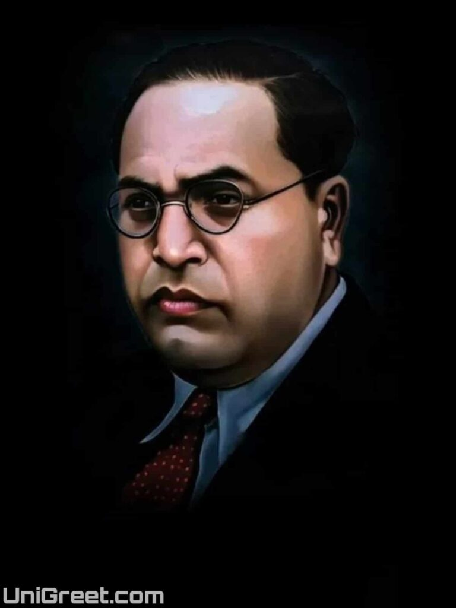

Remembering FATHER OF INDIAN CONSTITUTION

1. Birth and Early Life:
- B.R. Ambedkar, also known as Bhimrao Ramji Ambedkar, was born on April 14, 1891, in Mhow, British India (now in Madhya Pradesh, India). - He belonged to the Mahar caste, considered untouchable in the caste hierarchy.2. Education:
- Despite facing discrimination, Ambedkar excelled in academics. He pursued higher education in the United States and the United Kingdom, earning multiple degrees, including a doctorate from the London School of Economics.3. Role in Drafting the Indian Constitution:
- Ambedkar played a pivotal role in the drafting of the Indian Constitution after India gained independence in 1947. - He was appointed as the Chairman of the Drafting Committee, and his efforts led to the inclusion of provisions promoting social justice, equality, and the protection of the rights of marginalized communities.4. Advocate for Dalit Rights:
- Ambedkar dedicated his life to advocating for the rights of Dalits (formerly known as Untouchables) and other marginalized communities. - He emphasized social and economic equality and worked towards eradicating the caste system.5. Conversion to Buddhism:
- Disillusioned with the caste-based discrimination prevalent in Hinduism, Ambedkar publicly converted to Buddhism on October 14, 1956. - This mass conversion ceremony, attended by thousands, aimed to provide a path to equality and dignity for Dalits.6. Political Career:
- Ambedkar was an eminent political leader and the principal architect of the Indian Constitution. - He served as the first Law Minister of independent India and was instrumental in the establishment of the Reserve Bank of India.7. Social Reforms:
- Ambedkar campaigned for social reforms, including the right to education and the abolition of untouchability. - He founded the Bahishkrit Hitakarini Sabha in 1924, an organization that worked towards the welfare of the depressed classes.8. Legacy and Recognition:
- B.R. Ambedkar is often hailed as the "Father of the Indian Constitution" for his significant contributions to its drafting. - His tireless efforts for social justice and the upliftment of marginalized communities have earned him immense respect and recognition.9. Ambedkar Jayanti:
- April 14, Ambedkar's birthday, is celebrated as Ambedkar Jayanti in India to honor his contributions to the nation and his relentless pursuit of social justice. It is a day of remembrance and reflection on the principles he stood for.B.R. Ambedkar's life and work continue to inspire social and political movements aimed at fostering equality and justice in India.